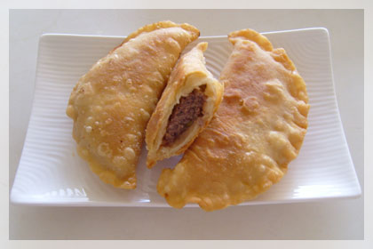
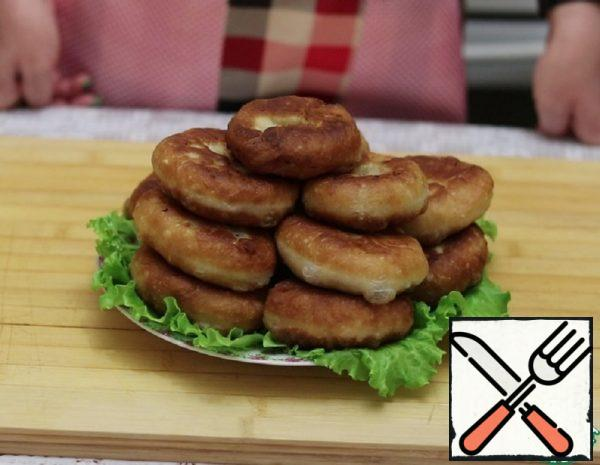

RECIPES
Chebureki

Description
Ingredients
- 2 1/2 cups flour
- 1/2 cup water
- 4 tablespoons olive oil
- 1/2 pound ground beef
- 1/2 teaspoon sugar (white)
- 1/2 onion (medium, finely chopped)
- 6 tablespoons milk
- 1 teaspoon parsley flakes (or finely chopped fresh parsley)
- avocado oil (for frying)
- salt (to taste)
- pepper (to taste)
Steps
- In a large bowl, sift together sugar, salt (about 1/3 teaspoon) and flour. Add olive oil. Add water to the flour mixture (a small amount at a time) mixing it and kneading dough until it's even, soft and doesn't stick to your hands. Add a little more flour if the dough is sticky, or water if it's stiff. Place the dough aside and prepare the filling.
- In a separate bowl, mix together ground beef, finely chopped onion and parsley. Season the mixture with salt and pepper and stir in milk.
- On a lightly floured surface, roll the dough until it is about 1/10-1/8 inch (2.5-3mm) thick. Cut circles using a small tea plate. Gather the rest of the dough into a ball and roll again. Repeat until you used all the dough.
- Place about 2 tablespoons of the filling on one side of the circle, leaving 1/2 inch (about 1cm) space at the edges.
- Fold the other half of the circle over and pinch the edges firmly together using your fingers.
- Make sure there is no air inside chebureki and the edges are closed tightly.
- In a large skillet, heat the oil for deep frying (it should cover about 1/2 of a cheburek), reduce heat to medium and place 3 or 4 chebureki into oil (depending on the size of your skillet). Fry chebureki on both sides until nicely and evenly brown (about 5 minutes per each side).
- Drain on paper towels, let rest for a few minutes. Serve while still hot.
Chebureki source link
Peremechki

Description
Ingredients
- 250 ml Water
- 450 gram Flour wheat / Flour
- 3 tablespoons vegetabe oil
- 1 teaspoon Salt
- 1 tablespoon Sugar
- 1 teaspoon Dry yeast
- 450 gram Minced meat
- 200 gram Onion
- 1 teaspoon Seasoning
- Black pepper to taste
Steps
- Prepare all the ingredients.
- In the sifted flour, add salt, sugar, yeast, and butter. Mix thoroughly, pour water and knead the dough. It will be a little liquid and will stick to your hands a little.
- We clean the onion, cut it into cubes and grind it into porridge in a blender.
- Add salt, pepper, spices, and ground onion to the minced meat. Mix everything thoroughly. The minced meat turns out to be thin.
- The dough was suitable for 20 minutes. We lubricate our hands with oil and knead it again (not for long). After greasing it with oil, cover it with a towel and set aside to rise for 40 minutes.
- After the dough is suitable, we lubricate the work surface with oil and transfer the dough to it. It stopped sticking to my hands.
- Divide the dough into 16 equal parts.
- We cover all the pieces with a towel, so that they do not get winded and begin to sculpt belyashi. From the ball we make a flat pancake, spread the filling on it and fix the edges so that a small hole would remain. This is what we do with all parts of the test.
- In a frying pan, pour the oil and heat it up strongly. We spread the peremech for roasting in maso with a hole in the bottom. Reduce the heat to medium heat.
- Fry the belyashi on each side for 4 minutes.
- We spread the belyashi on a paper towel, so that the excess oil would glass. We do this with all the whites and serve them to the table. Bon appetit.